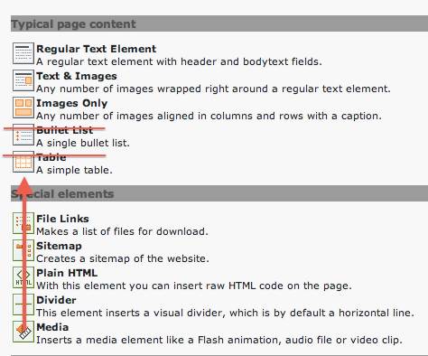
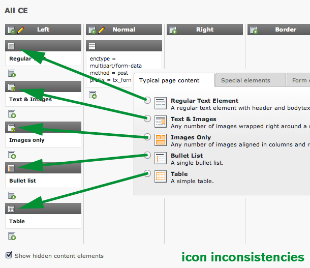

Feature #38732
Epic #61834: Create future proof Content Element with strong default
Feature #61839: Include modern Content Elements
Modernize Content Elements
| Status: | Under Review | Start date: | 2015-07-24 | |
|---|---|---|---|---|
| Priority: | Must have | Due date: | ||
| Assigned To: | Patrick Broens | % Done: | 0% |
|
| Category: | 7 Fluid CE | Spent time: | - | |
| Target version: | 7.4 (Backend) | |||
| PHP Version: | Sprint Focus: | |||
| Complexity: |
Description
Hi,
lets start to "modernize" Content Elements!
Removing old fashioned once and move
others from spacial to typical page content.
The Install-Wizard of version 6.0 should
handle the upgrade path and parse the old
content elements like "Bulletpoint" or the
"Table" to standard RTE Text content types.
We should also adapt to modern content
usage on todays websites and accept that
a video isn't special content anymore. So
this should be placed in the typical section.
Who could / like to do that?
Greez Jens

{kind=link}
{kind=link}
{kind=link}
Subtasks
Related issues
History
#1 Updated by Gerrit Code Review about 3 years ago
Patch set 1 for branch master has been pushed to the review server.
It is available at http://review.typo3.org/12702
#2 Updated by Soren Malling about 3 years ago
Missing a "none-green" icon for the media content now shown in "Typical content"
#3 Updated by Gerrit Code Review about 3 years ago
Patch set 2 for branch master has been pushed to the review server.
It is available at http://review.typo3.org/12702
#4 Updated by Ingo Renner about 3 years ago
I'd simply make them all have the same background color...
#5 Updated by Martin Wiederkehr about 3 years ago
Sorry, but in my point of view, removing the table content element is a really bad idea
Why?- A lot of our customers copy paste csv data into the table element as there are no styling issues
- As a poweruser, I love the simplicity and the full control over my content within the table element
- Don't remove the content element, but move it to a more inconspicuous place
#6 Updated by Jens Hoffmann about 3 years ago
- File New-Icon-Media-CE.gif added
Could be a by default disabled extension for old-fashion
guys, who dislike RTEs Power in terms of Tables. There
you could to for your CSV approach. Currently I aim to
have a copy/paste direct from Excel to RTE without the
CSV geek mode. :) We aim for the 90%, not the 10% of
power user - when we talk about a new default solution.
Here is the new Icon for the Media-CE:
#7 Updated by Felix Kopp about 3 years ago
- File icon-inconsistencies.png added
Remark: Also the icons from the "Add content element" wizard and after that within page module differ.
New issue?

#8 Updated by Jens Hoffmann about 3 years ago
Yep a new Issue, please.
But, good point! :)
#9 Updated by Jens Hoffmann about 3 years ago
Beside the "Text /w Img"-Icon, I think this fits quite well.
#10 Updated by Felix Kopp about 3 years ago
#11 Updated by Felix Kopp over 2 years ago
What about the content elements?
There is a patch pending to merge the content elements.
#12 Updated by Jens Hoffmann over 2 years ago
But (if I get this right in the 2 issues) the icons are still inconsistent, right?
#13 Updated by Felix Kopp 10 months ago
- Tracker changed from Suggestion to Feature
- Project changed from TYPO3 CMS Usability Team to Core
- Category deleted (
Technical) - Target version changed from TYPO3 6.0 to 7.0
#14 Updated by Felix Kopp 10 months ago
- Parent task set to #61839
#15 Updated by Alexander Opitz 8 months ago
- Status changed from Needs Feedback to New
- Start date deleted (
2012-07-07)
#16 Updated by Mathias Schreiber 7 months ago
- Target version changed from 7.0 to 7.1 (Cleanup)
#17 Updated by Benjamin Mack 7 months ago
- Target version changed from 7.1 (Cleanup) to 7.2 (Frontend)
#18 Updated by Gerrit Code Review 4 months ago
- Status changed from New to Under Review
Patch set 1 for branch master of project Packages/TYPO3.CMS has been pushed to the review server.
It is available at http://review.typo3.org/38258
#19 Updated by Gerrit Code Review 4 months ago
Patch set 2 for branch master of project Packages/TYPO3.CMS has been pushed to the review server.
It is available at http://review.typo3.org/38258
#20 Updated by Gerrit Code Review 4 months ago
Patch set 3 for branch master of project Packages/TYPO3.CMS has been pushed to the review server.
It is available at http://review.typo3.org/38258
#21 Updated by Patrick Broens 4 months ago
- Assigned To set to Patrick Broens
#22 Updated by Gerrit Code Review 4 months ago
Patch set 4 for branch master of project Packages/TYPO3.CMS has been pushed to the review server.
It is available at http://review.typo3.org/38258
#23 Updated by Gerrit Code Review 4 months ago
Patch set 5 for branch master of project Packages/TYPO3.CMS has been pushed to the review server.
It is available at http://review.typo3.org/38258
#24 Updated by Gerrit Code Review 4 months ago
Patch set 6 for branch master of project Packages/TYPO3.CMS has been pushed to the review server.
It is available at http://review.typo3.org/38258
#25 Updated by Gerrit Code Review 4 months ago
Patch set 7 for branch master of project Packages/TYPO3.CMS has been pushed to the review server.
It is available at http://review.typo3.org/38258
#26 Updated by Gerrit Code Review 4 months ago
Patch set 8 for branch master of project Packages/TYPO3.CMS has been pushed to the review server.
It is available at http://review.typo3.org/38258
#27 Updated by Gerrit Code Review 4 months ago
Patch set 9 for branch master of project Packages/TYPO3.CMS has been pushed to the review server.
It is available at http://review.typo3.org/38258
#28 Updated by Gerrit Code Review 4 months ago
Patch set 10 for branch master of project Packages/TYPO3.CMS has been pushed to the review server.
It is available at http://review.typo3.org/38258
#29 Updated by Gerrit Code Review 4 months ago
Patch set 11 for branch master of project Packages/TYPO3.CMS has been pushed to the review server.
It is available at http://review.typo3.org/38258
#30 Updated by Gerrit Code Review 4 months ago
Patch set 12 for branch master of project Packages/TYPO3.CMS has been pushed to the review server.
It is available at http://review.typo3.org/38258
#31 Updated by Gerrit Code Review 4 months ago
Patch set 13 for branch master of project Packages/TYPO3.CMS has been pushed to the review server.
It is available at http://review.typo3.org/38258
#32 Updated by Gerrit Code Review 3 months ago
Patch set 14 for branch master of project Packages/TYPO3.CMS has been pushed to the review server.
It is available at http://review.typo3.org/38258
#33 Updated by Gerrit Code Review 3 months ago
Patch set 15 for branch master of project Packages/TYPO3.CMS has been pushed to the review server.
It is available at http://review.typo3.org/38258
#34 Updated by Gerrit Code Review 3 months ago
Patch set 16 for branch master of project Packages/TYPO3.CMS has been pushed to the review server.
It is available at http://review.typo3.org/38258
#35 Updated by Gerrit Code Review 2 months ago
Patch set 17 for branch master of project Packages/TYPO3.CMS has been pushed to the review server.
It is available at http://review.typo3.org/38258
#36 Updated by Gerrit Code Review 2 months ago
Patch set 18 for branch master of project Packages/TYPO3.CMS has been pushed to the review server.
It is available at http://review.typo3.org/38258
#37 Updated by Gerrit Code Review 2 months ago
Patch set 19 for branch master of project Packages/TYPO3.CMS has been pushed to the review server.
It is available at http://review.typo3.org/38258
#38 Updated by Gerrit Code Review 2 months ago
Patch set 20 for branch master of project Packages/TYPO3.CMS has been pushed to the review server.
It is available at http://review.typo3.org/38258
#39 Updated by Gerrit Code Review about 1 month ago
Patch set 21 for branch master of project Packages/TYPO3.CMS has been pushed to the review server.
It is available at http://review.typo3.org/38258
#40 Updated by Benjamin Mack about 1 month ago
- Target version changed from 7.2 (Frontend) to 7.4 (Backend)
#41 Updated by Mathias Schreiber 29 days ago
- Category set to 7 Fluid CE
#42 Updated by Gerrit Code Review 20 days ago
Patch set 22 for branch master of project Packages/TYPO3.CMS has been pushed to the review server.
It is available at http://review.typo3.org/38258
#43 Updated by Gerrit Code Review 19 days ago
Patch set 23 for branch master of project Packages/TYPO3.CMS has been pushed to the review server.
It is available at http://review.typo3.org/38258
#44 Updated by Gerrit Code Review 19 days ago
Patch set 24 for branch master of project Packages/TYPO3.CMS has been pushed to the review server.
It is available at http://review.typo3.org/38258
#45 Updated by Gerrit Code Review 19 days ago
Patch set 25 for branch master of project Packages/TYPO3.CMS has been pushed to the review server.
It is available at http://review.typo3.org/38258
#46 Updated by Gerrit Code Review 19 days ago
Patch set 26 for branch master of project Packages/TYPO3.CMS has been pushed to the review server.
It is available at http://review.typo3.org/38258
#47 Updated by Gerrit Code Review 19 days ago
Patch set 27 for branch master of project Packages/TYPO3.CMS has been pushed to the review server.
It is available at http://review.typo3.org/38258
#48 Updated by Gerrit Code Review 19 days ago
Patch set 28 for branch master of project Packages/TYPO3.CMS has been pushed to the review server.
It is available at http://review.typo3.org/38258
#49 Updated by Gerrit Code Review 19 days ago
Patch set 29 for branch master of project Packages/TYPO3.CMS has been pushed to the review server.
It is available at http://review.typo3.org/38258
#50 Updated by Gerrit Code Review 19 days ago
Patch set 30 for branch master of project Packages/TYPO3.CMS has been pushed to the review server.
It is available at http://review.typo3.org/38258
#51 Updated by Gerrit Code Review 19 days ago
Patch set 31 for branch master of project Packages/TYPO3.CMS has been pushed to the review server.
It is available at http://review.typo3.org/38258
#52 Updated by Gerrit Code Review 17 days ago
Patch set 32 for branch master of project Packages/TYPO3.CMS has been pushed to the review server.
It is available at http://review.typo3.org/38258
#53 Updated by Gerrit Code Review 16 days ago
Patch set 33 for branch master of project Packages/TYPO3.CMS has been pushed to the review server.
It is available at http://review.typo3.org/38258
#54 Updated by Gerrit Code Review 16 days ago
Patch set 34 for branch master of project Packages/TYPO3.CMS has been pushed to the review server.
It is available at http://review.typo3.org/38258
#55 Updated by Gerrit Code Review 16 days ago
Patch set 35 for branch master of project Packages/TYPO3.CMS has been pushed to the review server.
It is available at http://review.typo3.org/38258
#56 Updated by Gerrit Code Review 16 days ago
Patch set 36 for branch master of project Packages/TYPO3.CMS has been pushed to the review server.
It is available at http://review.typo3.org/38258
#57 Updated by Gerrit Code Review 14 days ago
Patch set 37 for branch master of project Packages/TYPO3.CMS has been pushed to the review server.
It is available at http://review.typo3.org/38258
#58 Updated by Gerrit Code Review 13 days ago
Patch set 38 for branch master of project Packages/TYPO3.CMS has been pushed to the review server.
It is available at http://review.typo3.org/38258
#59 Updated by Gerrit Code Review 13 days ago
Patch set 39 for branch master of project Packages/TYPO3.CMS has been pushed to the review server.
It is available at http://review.typo3.org/38258
#60 Updated by Gerrit Code Review 10 days ago
Patch set 40 for branch master of project Packages/TYPO3.CMS has been pushed to the review server.
It is available at http://review.typo3.org/38258
#61 Updated by Gerrit Code Review 10 days ago
Patch set 41 for branch master of project Packages/TYPO3.CMS has been pushed to the review server.
It is available at http://review.typo3.org/38258
#62 Updated by Gerrit Code Review 10 days ago
Patch set 42 for branch master of project Packages/TYPO3.CMS has been pushed to the review server.
It is available at http://review.typo3.org/38258
#63 Updated by Gerrit Code Review 10 days ago
Patch set 43 for branch master of project Packages/TYPO3.CMS has been pushed to the review server.
It is available at http://review.typo3.org/38258